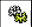

Passo 04: Selecionar no campo “Exibir” a opção de “Solicitações de compra em configuração”, a fim
de visualizar a SC copiada.
Passo 05: Após a realização da cópia de uma SC cancelada. Observar o status da SC  “Em
configuração”.
Passo 06: Para confirmar todas as ações realizadas, abrir a SC clicando no “Resumo” da solicitação de compra.